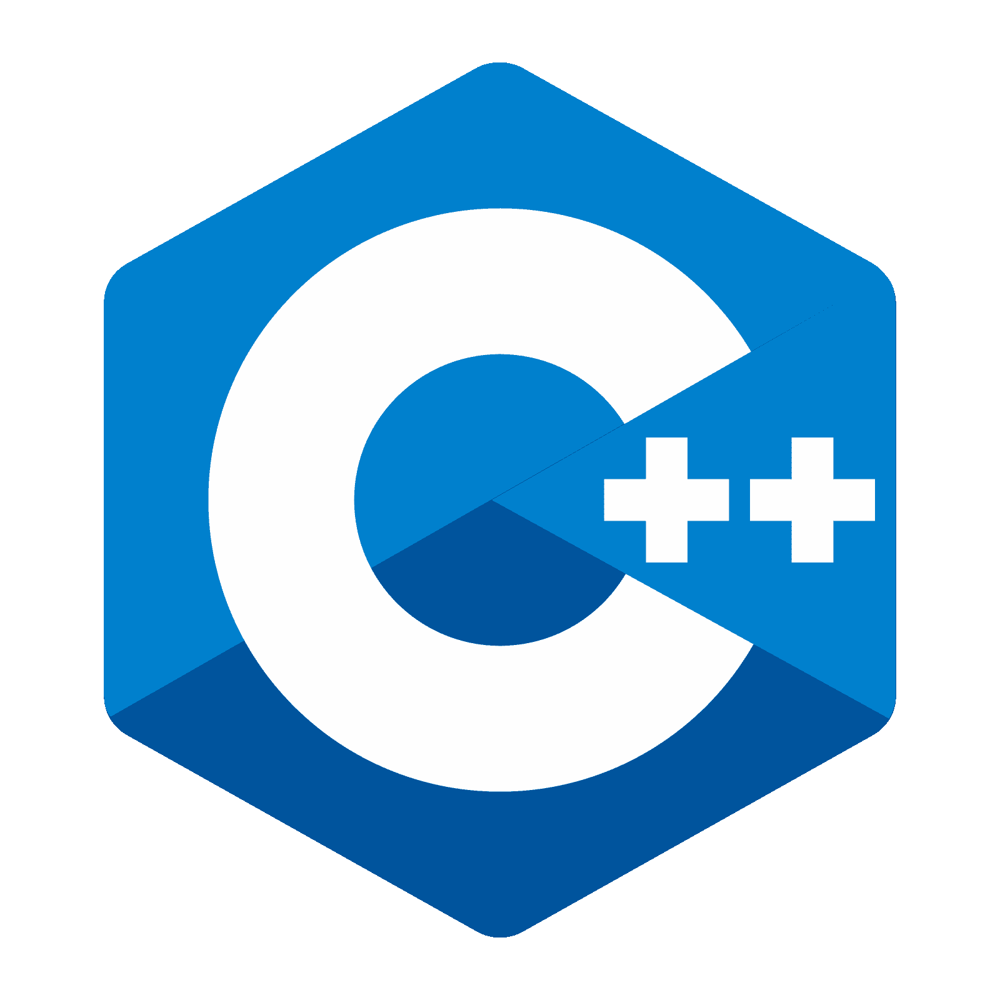
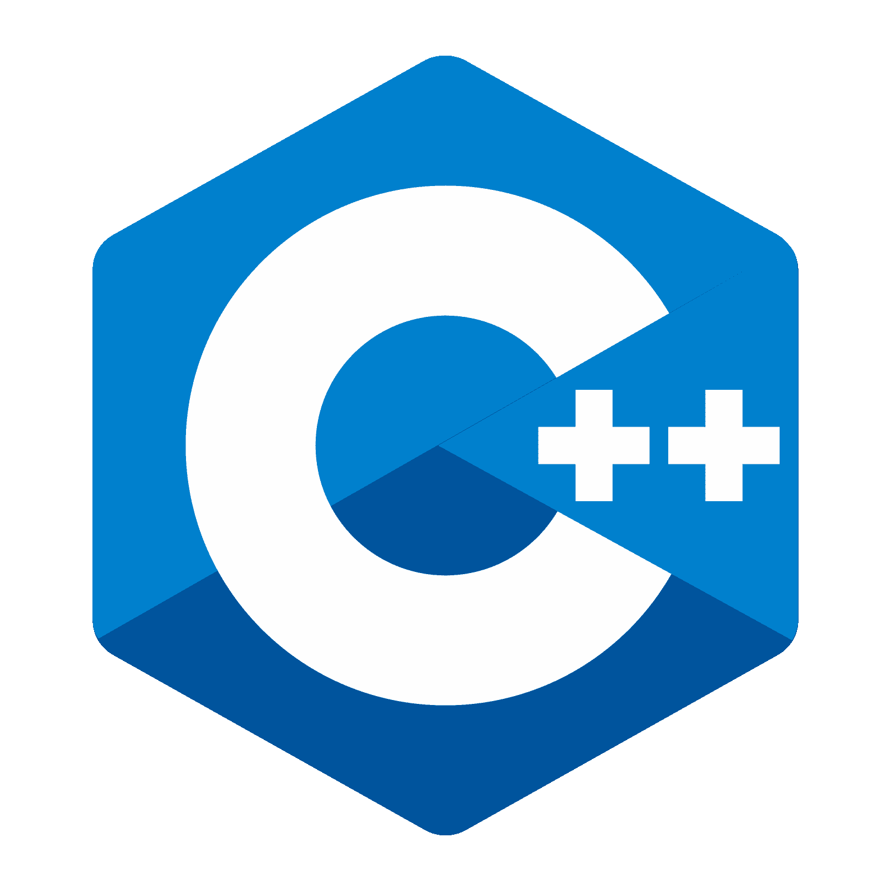

La plataforma en la nube de Azure consta de más de 200 productos y servicios en la nube diseñados para ayudarlo a dar vida a nuevas soluciones, para resolver los desafíos de hoy y crear el futuro . Cree, ejecute y administre aplicaciones en varias nubes, en las instalaciones y en el perímetro, con las herramientas y los marcos de su elección.

WordPress es un sistema de gestión de contenido o Content managment System (CMS) desarrollado en el lenguaje de PHP. Es decir es una aplicación de software que puede estar en la nube y te ayuda a gestionar los contenidos de un sitio web (Texto, imágenes, videos, etc).
La analítica web es el proceso (de recopilación, medición, evaluación y explicación racional) que empleamos para analizar la información extraída del comportamiento del usuario en nuestra página web, con el fin de optimizar.
El marketing digital (también llamado marketing online) es un sistema que permite promocionar los productos o servicios de una marca a través de internet, utilizando canales y herramientas en línea de manera estratégica para contribuir a alcanzar los objetivos de negocio generales de la empresa.

Microsoft 365 es una plataforma de productividad con tecnología de nube. Con una suscripción a Microsoft 365, se puede obtener: Las aplicaciones de productividad más recientes, como Microsoft Teams, Word, Excel, PowerPoint, Outlook, OneDrive y mucho más, además de permitir iniciar sesión desde cualquier dispositivo.
Python es un lenguaje de programación ampliamente utilizado en las aplicaciones web, el desarrollo de software, la ciencia de datos y el machine learning (ML). C++ es un lenguaje de programación que proviene de la extensión del lenguaje C para que pudiese manipular objetos.
 
